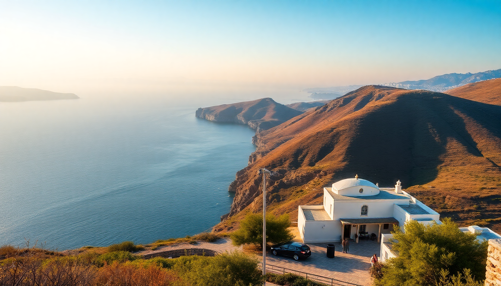

Best Day Trips from Mykonos: Delos, Tinos & Rhenia

I’ve spent a fair bit of time on Mykonos, and while the nightlife and whitewashed streets of Mykonos Town are fun for a couple of days, the real payoff comes when you get off the main island. Three day trips stand out: Delos for ancient ruins, Tinos for food and pilgrimage, and Rhenia for empty beaches. Here’s what I learned about each — ferry schedules, where to eat, and what to skip.
Why take a day trip from Mykonos at all?
Mykonos is compact but expensive. After two days of €8 beers and crowded beaches at Paradise Beach, I was ready for something quieter. The surrounding Cycladic islands are close enough that you can leave after breakfast and be back for dinner. Ferries run frequently, especially in high season (June–September). The key is picking the right island for your mood.
- Delos is for history buffs — it’s an entire archaeological site with no hotels or restaurants.
- Tinos is for food, marble villages, and the famous Church of Panagia Evangelistria.
- Rhenia is for swimming and solitude — no towns, just coves.
How do I get to Delos from Mykonos?
Delos is the easiest day trip. Excursion boats leave from the Old Port in Mykonos Town every morning, usually between 9:00 and 10:00. The crossing takes about 30 minutes. I booked a ticket at the dock the night before — no need to reserve weeks ahead unless it’s August. The boat drops you at the small Delos pier, and you walk straight into the site.
- Ferry companies: Delos Tours and Mykonos Excursions run the standard routes. Tickets cost around €20–€25 round trip.
- Site entry: €12 for adults. Bring cash — the ticket booth doesn’t always take cards.
- Guided tours: I joined a 90-minute English tour for €10 extra. Worth it for context on the Terrace of the Lions and the House of the Dolphins.
- What to bring: Water, sunscreen, and a hat. There’s zero shade on the main pathways.
What should I see on Delos?
Delos is a UNESCO site and, according to myth, the birthplace of Apollo. The entire island is an open-air museum. I spent about four hours walking the ruins, and that felt like the right amount — enough to see the highlights without baking in the sun.
- Terrace of the Lions: Five marble lions that have been guarding the sacred lake since the 7th century BC. They’re iconic for a reason.
- House of the Dolphins: A preserved Roman-era villa with stunning mosaic floors. The dolphin mosaic is still vivid.
- Mount Kynthos: A 20-minute hike up the island’s highest point. The view over the Cyclades is worth the sweat.
- The Theatre District: Steep stone seats overlooking the sea. You can sit where ancient audiences did.
- The Museum: Small but packed with statues and pottery. Air-conditioned — a welcome break.
One warning: there are no cafes or shops on Delos. The only facilities are a toilet near the entrance. Pack a sandwich and eat on the boat back.
Is Tinos worth a day trip from Mykonos?
Yes, and I’d argue it’s the most underrated day trip in the Cyclades. Tinos is larger than Delos and has real towns, restaurants, and beaches. The ferry from Mykonos takes 30–40 minutes on a conventional ferry (Hellenic Seaways or SeaJets). I took the 8:30 AM ferry and returned at 5:30 PM — enough time to see the main sights and eat a proper lunch.
- Church of Panagia Evangelistria: The most important pilgrimage church in Greece. Locals crawl up the hill on their hands and knees during the August 15 festival. Inside, the icon is covered in gold and silver offerings.
- Pyrgos: A marble-carving village in the hills. The Museum of Marble Crafts is small but fascinating. I watched a craftsman chisel a rosette by hand.
- Tinos Town waterfront: Lined with cafes and tavernas. I ate grilled octopus at To Koutali tis Marias — simple, fresh, and €12.
- Beaches: Agios Fokas is a 15-minute walk from town. Pebbly, but calm water and fewer crowds than Mykonos.
- Marble dovecotes: Scattered across the island. You’ll see them from the taxi — distinctive white towers with holes for pigeons.
Taxi from the port to Pyrgos costs about €25 each way. I split it with a couple from the ferry. If you’re on a budget, there’s a bus from Tinos Town to Pyrgos for €3, but it runs every two hours.
What about Rhenia — is it just a beach trip?
Rhenia is the uninhabited island just west of Mykonos. It’s not accessible by public ferry — you need a private boat or a day cruise. I booked a half-day catamaran trip through a company called Mykonos Sailing for €80 per person. That included lunch, drinks, and snorkeling gear.
- Beaches: We stopped at two coves. The first, Lia Bay, had turquoise water and a pebble beach. The second, Skinias, was sandier and shallower.
- What you do: Swim, snorkel, and eat. No ruins, no shops, no Wi-Fi. It’s pure downtime.
- Who it’s for: Couples or small groups who want a break from crowds. Not ideal if you need constant activity.
- Best time: Morning departure (10 AM) gets you back by 4 PM. Afternoon sun is brutal — bring a rash guard.
I’d only do Rhenia if you’ve already seen Delos and Tinos. It’s a nice rest day, but not a cultural trip.
FAQ
Is one day enough for Delos? Yes. The island is small — you can walk the entire archaeological zone in 3–4 hours. The boat schedule forces a half-day visit anyway. Arrive early to avoid the midday heat and the crowds from the second boat (around 11 AM).
Can I visit Tinos on my own without a tour? Absolutely. The ferry drops you at Tinos Town, which is walkable. Buses and taxis connect to Pyrgos and the beaches. I prefer independent trips — you set the pace and skip the souvenir stops.
What’s the best time of year for these day trips? Late May to early June or September. July and August are hot and crowded, especially on Delos. Ferries run less frequently in April and October, but the weather is still pleasant. I went in early June and had the Terrace of the Lions almost to myself at 10 AM.
Conclusion
- Delos is a must for history lovers — go early, bring water, and skip the guided tour if you prefer to wander.
- Tinos offers the best balance of culture and food — don’t miss Pyrgos and the octopus at To Koutali tis Marias.
- Rhenia is a lazy beach day — book a catamaran if you want silence and turquoise water.
- Logistics: Ferries from Mykonos Old Port run daily. Book Delos tickets the night before. For Tinos, use Hellenic Seaways. For Rhenia, book a sailing excursion online.
- Avoid: Eating on Delos (no options), the tourist-trap jewelry shops in Tinos Town, and any boat that promises “all three islands in one day” — you’ll just see ferry decks.